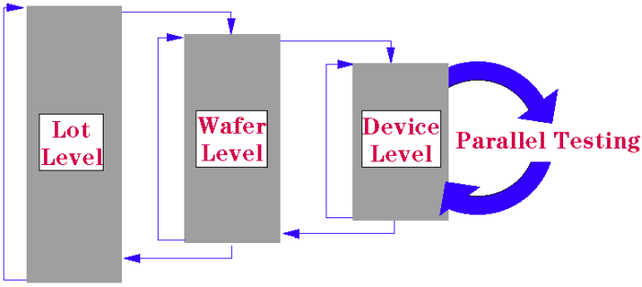

Application Model for Multisites
From the perspective of the application model there is no difference between multisite and single-site testing, except for the fact that the device level and the test level are now running very fast.
However, there are some application model items to consider for multisite testing:
- Command Interface actions are performed on all sites in common. Additional Command Interface calls allow you to set site specific data if required. Further information about these Command Interface calls is given in the manual Command Interface.
- The statement SET_DIE_X_Y operates on all sites. The handler/prober library is responsible for specifying the actual position of a die.
- The statement SET_PACKAGE_ID operates on all sites together. The ID receives the site number as an extension to ensure unique IDs.
The only difference is the programming of the Handler/Prober Library:
- When the application model requests the loading of a new device, the Handler/Prober Library determines how many devices must be inserted according to the testing strategy.
- When the application model requests a test, all mounted sites are tested in parallel. The
results are stored separately, so that at the end of the test each device can be binned correctly.

Note Download times for vectors are equivalent to single-site testing. Download times for timings and levels are longer, as pin-specific calculations have to be made (the number of pins has multiplied). The system also keeps data logging entries separate for individual sites.
Functional changes
- Introduced before SmarTest 6.3.2